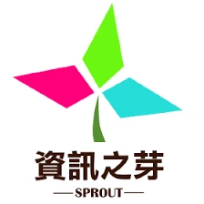
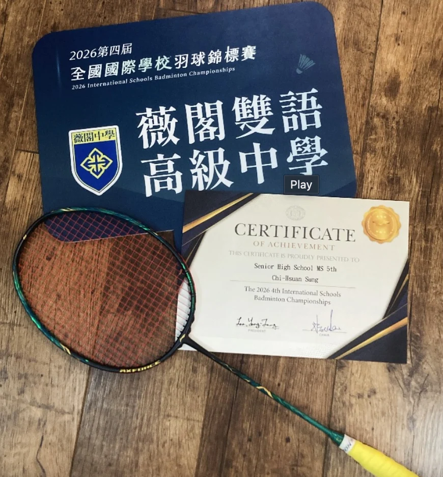

Beyond the workbench / Activities
Same curiosity.
Different arenas.
Learning to solve a problem.
Learning to make a team better.

Break it down.
Solve.
01 / Programming
A way
of thinking.
Advanced C++ and algorithm training through SPROUT, with a focus on data structures and computational problem solving.
Competitive programming led me to USACO Gold. The same habit of breaking problems down follows me into engineering.
Academic milestones ↗Practice / Repeat / ImproveA different kind of control
02 / Badminton
Practice.
Lead.
Play.
Club president and captain.
Organizing practice, supporting teammates, and competing in singles.
2025 & 2026
School men’s singles champion
2026 / International Schools Championships
5th place · Men’s singles

03 / Team science

Ideas become
shared work.
Physics demonstrations, environmental concepts, and leading a team through the process.
Explore SDG Engineering ↗